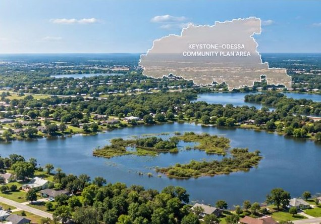
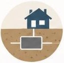
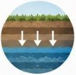
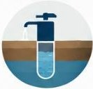
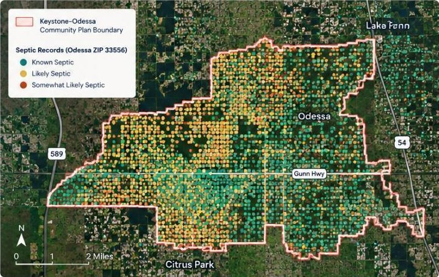
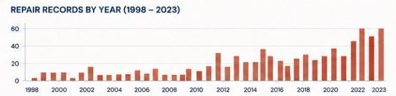
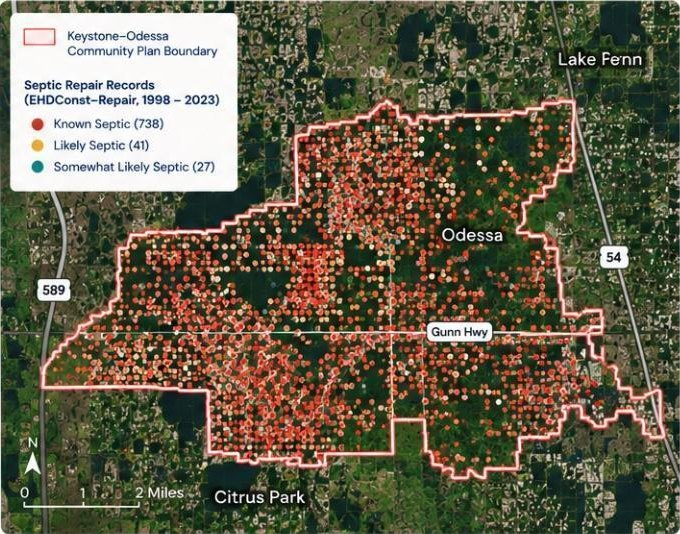
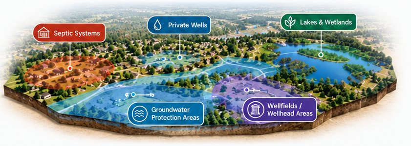
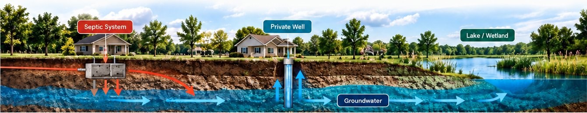
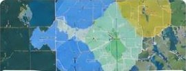

Septic Data
FLWMI Odessa ZIP 33556
Finding: 1,626 known septic, 1,210 likely septic, and 251 somewhat likely septic in Odessa ZIP 33556.
Source: Florida Water Management Inventory (FLWMI)
Date: 2024 (latest available)

Water & Septic
Keystone–Odessa depends heavily on private wells and septic. This affects the ability to use some Countywide solutions when the community faces septic concentration, environmental conditions, and the need to protect water resources.
View the Issue ↓
Wastewater is managed onsite through septic systems in many properties.

Septic systems and drinking-water wells share the same groundwater environment.

Groundwater supplies drinking water to many properties.
When septic systems, private wells and groundwater are connected, water and wastewater planning becomes a health, safety and environmental issue.
Water & Septic01 — Septic Concentration
Thousands of records in Odessa are classified as septic-related.
7,191
total records
1,626
Known Septic
1,210
Likely Septic
251
Somewhat Likely Septic
A total of 3,087 records are in the three septic classification groups in the Odessa ZIP 33556 dataset.

This is an actual condition that the Keystone–Odessa planning framework must be able to address.
Water & Septic02 — Septic Repairs
806 repair records show that this is an issue that has continued over time.
806
EHDConst–Repair records (1998–2023)
738
Known Septic
41
Likely Septic
27
Somewhat Likely Septic


Planning policy must be able to respond to the actual conditions of today.
Water & Septic03 — Connected System
Private wells draw from groundwater. When septic systems fail or wastewater is inadequately treated, contaminants can reach that water. Soil conditions, the number of systems and distance to wells matter.

The connection doesn’t stop at your property line.

Keeping Keystone–Odessa beautiful should include serious scrutiny of the rules governing water and wastewater infrastructure. No planning document should be beyond question.
Protect our water. Rethink the rules.
Our petition calls for retiring the Community Plan and changing the related restrictions, with health, safety and welfare at the centre of County decisions.
Water & Septic04 — Water & Wastewater Options
The County has water and sewer pathways for certain environmental problems, septic concerns and water-resource protection. Keystone–Odessa is expressly excluded from several of them. Why should our community accept fewer options for addressing these needs?
THE EXCLUSIONS ARE WRITTEN INTO POLICY. One Water 4.3.7 excludes Keystone–Odessa from specified environmental, flood-prone septic and wellhead-area routes, plus the overriding-public-interest process. Read the criteria behind each route.
Source: County Comprehensive Plan One Water and Mobility. County compilation dated June 26, 2026. One Water 4.3.2–4.3.7: pp. 229–234. Mobility 5.1.2–5.1.4: p. 135. Constrained roads: pp. 250–251. Read the County policy and full criteria
Private wells, septic systems and sensitive water resources make infrastructure choices important.
Specific policies allow consideration of connections for qualifying environmental and public-interest circumstances.
Policy 4.3.7 excludes this area from several of those pathways.
Preserving rural character should not put these policy choices beyond scrutiny.
Our community deserves more than a closed door.
Sign our petition to retire the Community Plan and support the related County policy changes needed to reopen these options.
Water & Septic05 — The Core Conflict
In 2024, the County expanded rural water and sewer options. Commissioners deliberately excluded Keystone–Odessa from several of them.
Planning staff supported consistent treatment and said safeguards addressed development concerns. Commissioners chose exclusion.
HEALTH. SAFETY. WELFARE. WHY EXCLUDE US? One excluded utility review weighs public health, safety, welfare and public benefits. Keystone–Odessa deserves suitable options considered on their merits.
Read the public-interest criteria and exclusion — Policies 4.3.5 and 4.3.7
Reverse the exclusions. Open the options.
Source detail: April 8, 2024 staff report, p. 7; May 9 minutes, Book 576, pp. 39–40; One Water 4.3.5 and 4.3.7, pp. 233–234. The specified-route exclusions include a pre-existing wellhead carveout; not every exclusion originated in 2024. The separate health-hazard route remains. Read the May 9, 2024 Board minutes — Book 576, pages 39–40
SUPPORT WENT BEYOND PLANNING STAFF. Water Resources staff supported the proposed rural reforms; Emergency Management said they aligned with mitigation goals. The Citizens Advisory Committee supported rural sewer options while preserving rural character.
Source detail: HC/CPA 23-18 adoption packet. Planning staff rationale, pp. 5–7; EPC, pp. 21–23; Water Resources and Emergency Management, pp. 28–29; Citizens Advisory Committee, p. 53. These comments support the rural utility reforms, not SCU or retirement of the Community Plan. Read the 2024 staff report and agency comments
Source: County Comprehensive Plan One Water and Mobility. County compilation dated June 26, 2026. One Water 4.3.2–4.3.7: pp. 229–234. Mobility 5.1.2–5.1.4: p. 135. Constrained roads: pp. 250–251. Read the County policy and full criteria
Community Plan goal
Protect Water Resources
Actual tools
Protecting water resources requires a planning framework that can respond to actual problems when they arise.
OPEN THE DOOR TO PREVENTION. Protecting water should mean evaluating every suitable tool before a problem becomes a crisis.
Source: County Comprehensive Plan One Water and Mobility. County compilation dated June 26, 2026. One Water 4.3.2–4.3.7: pp. 229–234. Mobility 5.1.2–5.1.4: p. 135. Constrained roads: pp. 250–251. Read the County policy and full criteria
PROTECT RURAL CHARACTER. KEEP WATER OPTIONS OPEN. County policy says utility service cannot justify higher density or incompatible rezoning.
Source: County Comprehensive Plan One Water and Mobility. County compilation dated June 26, 2026. One Water 4.3.2–4.3.7: pp. 229–234. Mobility 5.1.2–5.1.4: p. 135. Constrained roads: pp. 250–251. Read the County policy and full criteria
In 2024, the County expanded rural water and sewer options.
Commissioners excluded Keystone–Odessa from several of them.
Staff supported consistency
Planning staff said safeguards addressed development concerns. Commissioners chose exclusion.
Read the 2024 staff report →Health. Safety. Welfare.
One excluded utility review weighs these public interests. Why exclude Keystone–Odessa?
Read Policies 4.3.5 and 4.3.7 →Reverse the exclusions. Open the options.
Sources: HC/CPA 23-18 • May 9, 2024 Board minutes • One Water 4.3.5 and 4.3.7
Water & Septic06 — Community Plan vs County Comprehensive Plan
Water & Septic07 — Evidence
FLWMI Odessa ZIP 33556
Finding: 1,626 known septic, 1,210 likely septic, and 251 somewhat likely septic in Odessa ZIP 33556.
Source: Florida Water Management Inventory (FLWMI)
Date: 2024 (latest available)
EHDConst–Repair 1998–2023
Finding: 806 records for septic system construction/repair (738 known septic, 41 likely septic, 27 somewhat likely septic).
Source: EHDConst–Repair applications
Date: 1998–2023

Wells, groundwater and protection areas
Finding: Maps show private wells, groundwater, wellhead/wellfield protection areas, lakes and wetlands in the area.
Source: Hillsborough County and partner data
Date: Various (latest available)
Water/wastewater infrastructure and monitoring records
Finding: Documents include water infrastructure, drainage, and water monitoring records related to the area.
Source: Hillsborough County (Records provided in response to public records requests)
Date: 2024–2025
Community Plan + One Water + County Comprehensive Plan
Finding: Policies show water protection goals, Countywide One Water pathways, and exclusion of some pathways for the Community Plan area.
Source: Livable Communities Element (Keystone–Odessa), One Water, County Comprehensive Plan
Date: Various (latest available)